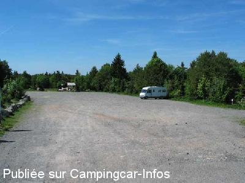
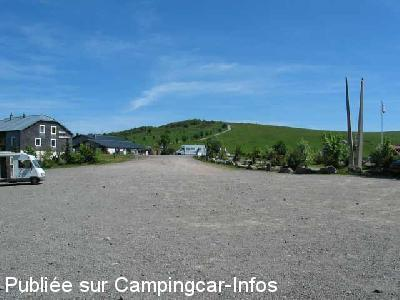

APN = Parking toléré jour/nuit de :
SAINT MAURICE SUR MOSELLE Ballon d'Alsace
(N° 436)
Accès/adresse :
D465
Ballon d'Alsace
88560 SAINT MAURICE SUR MOSELLE
Ballon d'Alsace
88560 SAINT MAURICE SUR MOSELLE
Latitude : (Nord) 47.82028° Décimaux ou 47° 49′ 13′′
Longitude : (Est) 6.83472° Décimaux ou 6° 50′ 4′′
Tarif : 2003
Stationnement : 3 €/nuitée
Services :
Autres informations :
Pour le stationnement voir avec la boutique de souvenirs.

Le 20/06/2004 par nomade 59

Le 20/06/2004 par nomade 59
de
jym17
le 06/10/2011 :
un nouvel aire de camping-car vient d'être construit environ 1km avant le sommet, la borne n'était pas en fonctionnement mi-septembre 2011 prévu pour 10camping-car, bien signale bien délimité
calme vue magnifique
Aucun commerce
un nouvel aire de camping-car vient d'être construit environ 1km avant le sommet, la borne n'était pas en fonctionnement mi-septembre 2011 prévu pour 10camping-car, bien signale bien délimité
calme vue magnifique
Aucun commerce
de
LAMBERT
le 24/06/2010 :
Sommes passés début juin, le parking est en réfection et il n'est plus possible de stationner actuellement.
Sommes passés début juin, le parking est en réfection et il n'est plus possible de stationner actuellement.
de
Viviane
le 20/02/2009 :
Nous nous sommes arrêtés à plusieurs reprises au Ballon en période estivale. L'année passée, nous avons été surpris de constater la gratuité des lieux, étonnant car c'est un endroit de stationnement très agréable et pratiquement désert une fois les randonneurs partis.
Nous nous sommes arrêtés à plusieurs reprises au Ballon en période estivale. L'année passée, nous avons été surpris de constater la gratuité des lieux, étonnant car c'est un endroit de stationnement très agréable et pratiquement désert une fois les randonneurs partis.
de
Aude DEFRANCE
le 14/08/2003 :
Calme mais une bande de jeunes est arrivée musique à fond vers 1 H du matin... Aucun services. 3€ la nuit (voir avec la boutique souvenir) De belles balades à faire
Calme mais une bande de jeunes est arrivée musique à fond vers 1 H du matin... Aucun services. 3€ la nuit (voir avec la boutique souvenir) De belles balades à faire
de
le 19/08/2002 :
Calme la nuit,une vue superbe sur la vallée
Calme la nuit,une vue superbe sur la vallée